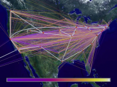

This learning object gives an introduction to the changing nature of international relations as brought about by the information revolution, with a specific focus on risks and insecurity in the information age. A basic knowledge of the information revolution is essential to understanding the risks related to information and communications technology (ICT). First, the learning object explains the relevance of information and knowledge in today's world. Then, it discusses the development of ICT and, in particular, the Internet, the most important application of ICT. In conclusion, it investigates the key security issues related to the information revolution and the inherent insecurity of the information infrastructure.
Students will understand the main risks and insecurities that have arisen as a result of the information revolution. You will understand the significant changes that the information revolution has brought about. You will also know how new ICTs have enhanced global communication and why there is increased uncertainty among risk specialists today, compared to the Cold War era. You will learn about the dependency of the so-called information society on complex, insecure technologies, and you will understand why the number of potentially malicious actors has increased in the information age.
The basic conditions in which international relations operate have undergone some fundamental changes in the past decade. Most experts agree that the information revolution is an important component of this ongoing transformation. But although there is a general belief that the information revolution is causing a widespread restructuring of the international system, it is difficult to pinpoint the exact nature of these changes. Academics are still struggling to understand the often contradictory and volatile developments and the increasing complexity brought about by the information revolution.
While the information revolution is believed to have an overall positive effect on the development of humankind, it is also becoming apparent that there is another side to the coin. The increasing value of information, and the availability of electronic means to manage its ever-growing volume, have not only turned information and information systems into invaluable assets, but have also made them attractive targets for malicious actors. This becomes a central security issue as societies become increasingly reliant on a spectrum of highly interdependent national and international software-based control systems.
This learning object introduces the main causes for insecurity that have arisen in the information age. It shows how the so-called information revolution has driven change in today's world and has caused political, economic, and societal changes with a direct link to risk and insecurity. It focuses on how risks relate to the technology itself and shows that insecurity is ubiquitous in the digital world. Furthermore, it focuses on the information society, in which states — along with a multitude of non-state actors throughout the world — have access to information and compete for influence, while remaining dependent on complex, insecure technologies. This inevitably creates new vulnerabilities, which are among the main causes of the risks modern societies face.
The fact that information and knowledge are crucial resources is not unique to our time; information and knowledge have always been vital. Also, throughout history, advances in scientific-technical fields have played major roles in changing the nature of our societies; this is not the first information and communication revolution, and all such revolutions have shaped history, human activities, and human institutions.
Throughout history, human beings have needed to communicate and exchange information. There are many reasons for this — the need to alarm others, to provide for common needs, to establish a sense of community and human empathy, and to exchange information and news, to name but a few. In many respects, civilization is based on the human need — and ability — to communicate and to exchange information. Drums, torches, signal fires, flags, pictographs on papyrus, and writing on clay and stone tablets were among the earliest technologies humans used as a means of reducing the effects of distances, times, and locations on communication. These methods have improved our ability to communicate, but their uses were limited. Some methods required favorable environmental conditions, such as little wind, a clear line of visibility, or good weather.
In the mid-19th century, this began to change. The 150 years since then can be seen either as a single, ongoing information revolution with three distinct phases, or as three distinct historical periods, each significant enough to be considered a revolution. The first modern information revolution began in the mid-19th century and lasted for approximately 100 years. Technologies such as the telegraph, telephone, and radio came of age. The second modern information revolution lasted from the mid-20th century until the 1980s. During this period, technologies such as television, early generation computers, and satellites brought the world more closely together. Since the 1980s, more information technologies have been developed and implemented, technologies with capabilities that dwarf those of information technologies already in use. We are now in the midst of a third modern information revolution, one that should perhaps be called a knowledge revolution, as it involves advances in information technologies that significantly alter the politics, economics, sociology, and culture of knowledge creation and distribution.
Before continuing, please complete the exercise below.
The term information revolution is broad and encompasses the two points you have ticked correctly. Let us now turn to the next section, in which you will learn about the technologies central to the current information revolution.
- Advanced computing
- Advanced networking
- Cellular and wireless technology
- Digital transmission and compression
The most fundamental changes in the way we communicate and interact have been brought about, in particular, by joining computers with telecommunications, integrating these technologies into a multimedia system of communication with a global reach, and making them available to all at low cost. One of the most noteworthy features of the information revolution is the tendency to "connect everything to everything", thus creating vast open networks of different sizes and shapes.
The best-known and also most influential network today is "the Internet", a global, decentralized network that connects millions of computers, thus forming a network in which one computer can communicate with any other.
 This link to Hobbes' Internet Timeline provides
you with some of the key events and technologies
that helped shape the Internet as we know it
today.
This link to Hobbes' Internet Timeline provides
you with some of the key events and technologies
that helped shape the Internet as we know it
today.

The picture shows the NSFNET, a series of networks created for research and education purposes. The image represents byte traffic in this network for November 1993. The colored lines represent virtual connections from network sites to the backbone. Bear in mind that this is just one network that is part of the much vaster Internet. (© Image courtesy of the National Center for Supercomputing Applications [NCSA] and the Board of Trustees of the University of Illinois)The Internet is the most prominent and amazing manifestation of ICT, when we consider its phenomenal growth rate and the massive political, social, cultural, and economic changes stimulated by it. The Internet is very young, considering that it rose to prominence in the early 1990s. It creates a new dimension, a detached place called cyber-space, which describes the fusion of all communication networks, databases, and sources of information into a huge, tangled, and diverse net of electronic interchanges.
Before continuing, please complete the exercise below.
The Internet, while creating vast new opportunities, also creates insecurity, complexity, and, ultimately, the vulnerability of modern societies. The following sections will deal with the reasons for ICT-related vulnerabilities.
The Internet as a key component of the networked global information infrastructure can be used as a showcase for the inherent insecurity of today's technological environment. A historical excursion may be useful for understanding the inherent insecurity of the Internet. The Internet emerged in the 1960s as the ARPAnet, a US Department of Defense project to create a nationwide computer network that would continue to function even if a large portion of it were destroyed in a nuclear war or natural disaster. During the next two decades, the network that evolved was used primarily by academic institutions, scientists, and the government for research and communication. Nevertheless, all the early network protocols that now form part of the Internet's infrastructure were designed for openness and flexibility, and not with security in mind.
In the early 1990s, the nature of the Internet changed significantly after the US government began pulling out of network management, and as commercial entities offered Internet access to the general public for the first time. This development coincided with the advent of increasingly powerful, yet reasonably-priced personal computers with easy-to-use graphical operating systems. The commercialization of the Internet had a considerable impact on making the network inherently insecure, because there are significant market-driven obstacles to IT security. There is no direct return on investment, time-to-market considerations impede extensive security measures, and security mechanisms often have a negative impact on usability, so that security is often sacrificed for functionality.
- Intangibility of Information
- Digital information exists independently from the physical tools that carry information. And information cannot be absolutely contained — it is easily disseminated, copied, modified, destroyed, or stolen. The negative effects of this flexibility include information theft, identity theft, and intellectual property theft.
- Complexity of ICT Systems
- Every ICT system contains bugs (i.e. software or hardware faults). The more complex an ICT system is, the more bugs it contains. Not all bugs compromise security, but those that do can be exploited by potential attackers. An ICT system's security is difficult to control and manage. ICT systems interact with other systems and with people, and some of their features (and vulnerabilities) were never anticipated when they were originally designed.
- Automation
- One important property of computers is the huge potential for automation. Computer programs can automate many arduous tasks and thus provide a high degree of efficiency and accuracy. But automation can also ease and speed up the process of breaking into an ICT system.
- Global Networking
- In the real, physical world attacks occur at specific geographical locations. In the world of global networks, however, attackers can connect to the Internet from any computer anywhere in the world and reach any other online system, regardless of its physical location. This global connectivity makes attacking easier and less resource-intensive; also, maintaining anonymity is relatively easy. Further, globalization is making criminal investigations and prosecutions increasingly difficult because, typically, several countries with different — and often incompatible — legal systems are involved.
- Development of New Tools
- Only a relatively small number of people have the necessary skills to attack ICT systems. However, once attackers find a particular vulnerability that can be exploited, they often write a software program to automate the exploitation of that vulnerability and make their program available for downloading on the Internet. Thus, every Internet user — regardless of their skills — has access to a range of software programs that can be used against various ICT systems.
Before continuing, please complete the exercise below.
The globalization and mass popularization of the Internet mean that an ever-widening range of actors now has access to powerful tools for the rapid collection, production, and dissemination of information on a worldwide scale. International actors not restricted by geography (mainly multinational corporations and non-governmental organizations) will increasingly gain the ability to act internationally with little regard for the interests of states. In addition, a wide range of potentially malicious actors is believed to have the means to exploit, distort, disrupt, and destroy information resources, which poses a significant threat to the functioning of highly-developed societies. We will turn to this changing risk environment in the last section.
With the advent of the Internet, new and diverse actors have entered the stage. An abundance of non-governmental organizations, social movements, and other transnational non-state networks are now competing with states for influence. These new contenders seek to persuade a public that is increasingly global, and they are now able to mobilize support for a range of issues, with both good and bad intentions.
The huge increase in the number of actors and the potential fluidity of the international political agenda considerably complicate the conduct of statecraft and the formulation of policy. The notion that in the near future every person on Earth will, in principle, be able to reach and influence every other person, as well as a good portion of society's collective technical infrastructure, is by no means unthinkable. The developments of the past decade have led many observers to assume that the forces driving global change are undermining the state and its political agencies. The state's primacy as the central actor in international affairs is being challenged by ICT. States are finding it difficult to maintain their position as exclusive providers of security and economic well-being — two of their main duties. For example, states are unable to provide substantial security against the threats of information warfare and cyber-terrorism, and as economic activity is increasingly being conducted internationally, the ability of individual states to ensure and control such activity is further compromised.
In addition, the risk environment has become more complicated due to the empowerment of actors with the ability to access and use, but also manipulate computer-based information stores more efficiently. There is a creeping uneasiness about the vulnerability of ICT systems as we connect more and more systems together. This unease is linked to the rapid spread of ICT on the global marketplace, the availability of software tools to cause harm in cyberspace, and the increasing dependency of modern societies on ICT. The number of human-to-computer and computer-to-computer transactions is increasing exponentially, and with their increasing complexity, global communication networks are continually opening up new opportunities for attackers who exploit ICT vulnerabilities by inserting faulty instructions or malicious code. This presents new challenges in the form of cyber-based threat actors who, be it accidentally or maliciously, can impose significant costs or even serious damage on private and public computer networks.
- The (ongoing) information revolution has brought about huge changes in today's world. It has increased the speed, the capacity, and the flexibility with which we can gather, process, and transmit data, and convert that data into knowledge. The information revolution has significantly enhanced our ability to communicate data and information.
- There have been several information and communications revolutions. Developments in the way we transmit and acquire information or knowledge, and advances in the scientific and technical fields (which are major components of information revolutions), are not new.
- The current information revolution has been made possible through information and communications technology (ICT). ICT is a wide range of services, applications, and technologies that use various types of equipment and software, and often run on telecom networks. The Internet is the most prominent and amazing manifestation of ICT.
- The characteristics of the networked world are having a huge impact on today's risk environment. Key features are: the intangibility of information; the increasing complexity of ICT systems; the automation of various processes; global connectivity; and the rapid development of new tools.
- The changing risk environment is characterized by the rapid spread of ICT on the global marketplace, the increase of potentially malicious actors, the diminution of the power of nation states, and the increasing dependency of modern societies on ICT.


You have completed this learning object.
You have completed this learning object.
Please click on the button to close this window.